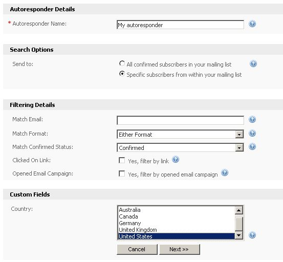
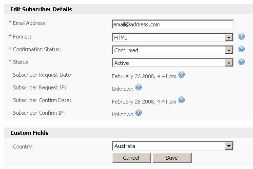

If you are sending your autoresponders to a limited part of your contact list, then the contacts who were not emailed did not meet those filtering options. For example, if you have a "Country" custom field and your autoresponder is set to only send to those contacts whose "Country" field is set to "United States":

... then someone whose "Country" custom field was set to "Australia", as shown below:

... would not meet the filter criteria, which means they should not (and would not) receive the autoresponder you created, because you've chosen to only send it to contacts whose "Country" custom field is set to "United States".
This may also happen if the contact has not confirmed their email address details but your autoresponder is set to only send to confirmed contacts. To send to all contacts, you can either choose not to filter the contacts who receive it based on custom field values, or you can change the "Match Confirmed Status" from "Confirmed" to "All" to send it to everyone on your contact list.